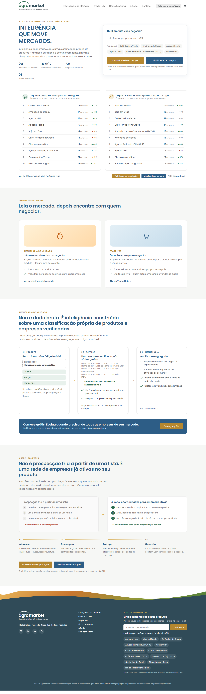
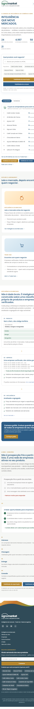
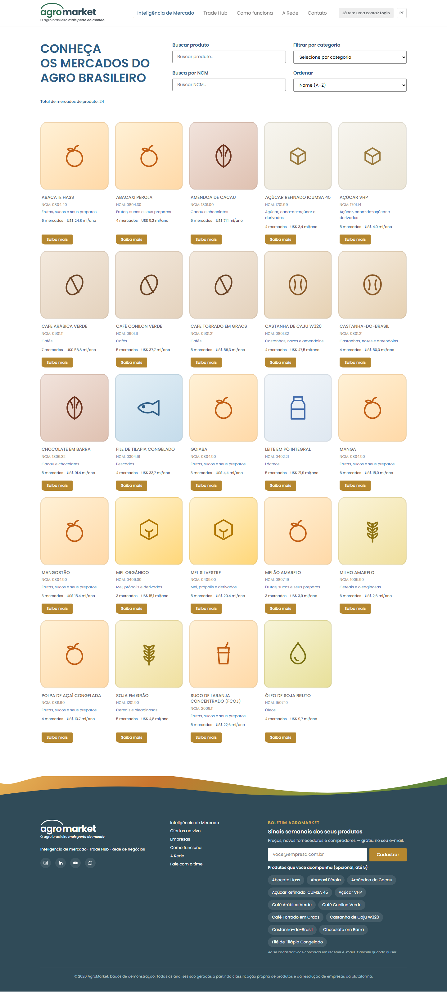
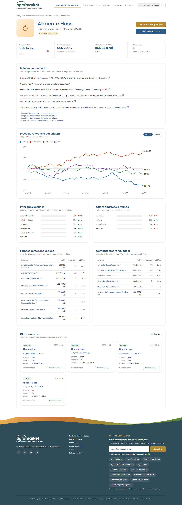
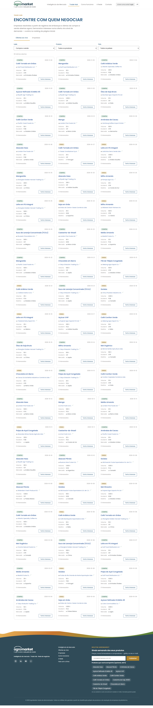
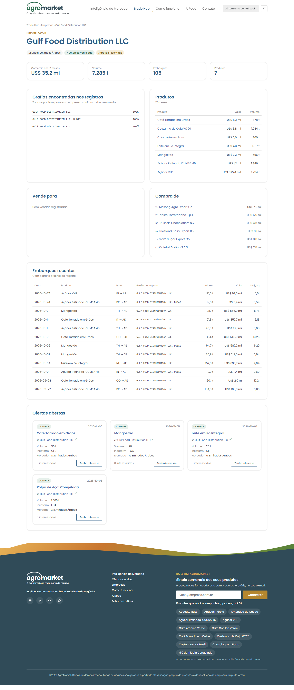

Página inicial
Busca de produto com sugestões, os dois rankings de demanda das últimas 4 semanas, as três camadas de dados e a comparação entre prospecção fria e a rede.
- Busca + populares
- Compradores procuram
- Vendedores querem exportar
- Viabilidade grátis
- Produto · Empresa · Inteligência
- A Rede em 4 passos
- Newsletter


Catálogo de mercados
Segue o layout da página de produtos do AgroBR: título à esquerda, filtros por nome, NCM e categoria à direita, total cadastrado e cards com "Saiba mais".

Página de produto
Exemplo do Abacate Hass. Números principais, boletim em que cada afirmação cita a fonte, preço semanal por país de origem, destinos, origens, empresas ranqueadas e ofertas ao vivo.
- Preço FOB Brasil
- Boletim com fontes [1]–[4]
- Gráfico 52 semanas
- Destinos e origens
- Fornecedores e compradores
- Ofertas ao vivo

Trade Hub
Ofertas de compra e venda abertas, com filtros. "Tenho interesse" grava um sinal que volta para os rankings da página inicial e define quem recebe as próximas ofertas.

Página de empresa
Todas as grafias do nome encontradas nos registros de embarque, juntadas numa empresa só, com a confiança de cada uma. Mais produtos, parceiros e embarques recentes.
